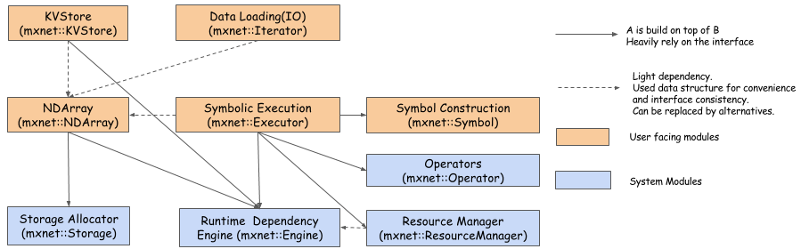

翻译自 https://mxnet.incubator.apache.org/architecture/overview.html

这张图展示了 MXNet 的主要模块和组件，以及它们之间的交互。这些模块是：
Runtime Dependency Engine: 根据运算之间读写的依赖关系，调度并执行它们。
Storage Allocator: 高效地分配和回收主机（CPU）和设备（GPU）的内存。
Resource Manager: 管理全局资源，比如随机数生成器和临时空间。
NDArray: 动态的异步的 n-维数组，为 MXNet 提供灵活的命令式编程。
Symbolic Execution: 静态符号图执行器，提供高效的符号图执行和优化。
Operator: 定义静态的前向和梯度计算（backprop）的运算符。
SimpleOp: 以统一的方式扩展 NDArray 运算符和符号式运算符的运算符。
Symbol Construction: 提供创建计算图（网络配置）的方式。
KVStore: 键值存储接口，提供高效的参数同步机制。
Data Loading (IO): 高效的数据加载和更新。
你不仅可以使用 MXNet 引擎进行深度学习，还可以使用它来解决任何专业领域的问题。MXNet 的设计目标是解决通用问题：根据依赖关系来执行一系列的函数。有依赖关系的任意两个函数应该按顺序执行。为提升性能，没有依赖关系的函数可以被并行执行。关于这方面的更详细的讨论，请见 notes on the dependency engine。
下面这个 API 是执行引擎的核心接口：
virtual void PushSync(Fn exec_fun, Context exec_ctx,
std::vector<VarHandle> const& const_vars,
std::vector<VarHandle> const& mutate_vars) = 0;
这个 API 允许你将一个函数（exec_fun）和它的执行上下文（context）以及依赖关系一起推送给执行引擎。exec_ctx 是 exec_fun 的执行上下文，const_vars 是函数要读取的变量，mutate_vars 是函数要修改的变量。执行引擎提供以下保证：
任意两个函数，如果它们要修改同一个变量，则它们的执行顺序与它们被推送到引擎的顺序是一致的。
引擎的函数的类型是：
using Fn = std::function<void(RunContext)>;
RunContext 包含了运行时的信息，这些信息由引擎来确定。
struct RunContext {
// stream pointer which could be safely cast to
// cudaStream_t* type
void* stream
};
或者，你也可以使用 mxnet::engine::DAGEngine::Fn, 它有相同的类型定义。
所有的函数都在引擎的内部线程中执行。在这种模型中，把会阻塞的函数（通常是处理磁盘或网络之类的 I/O 任务的操作）发送给引擎通常不是个好主意，因为它会占用执行线程，并且降低吞吐量。在这种情况下，我们提供了另一个异步的函数：
using Callback = std::function<void()>;
using AsyncFn = std::function<void(RunContext, Callback)>;
在 AsyncFn 中，你可以把阻塞的部分传回到你自己的线程，然后退出函数。引擎在调用 Callback 之后才会认为 AsyncFn 函数执行完成。
你可以指定函数执行的上下文。这通常包括函数该在 CPU 还是 GPU 上运行，如果指定使用 GPU，还可以指定哪个 GPU。Context 和 RunContext 不同，Context 包含设备类型 (GPU/CPU) 和设备 id，而 RunContext 包含只有运行时才能确定的信息，比如函数应该在哪个流上执行。
VarHandle 是用来指定函数之间的依赖关系的。MXNet 引擎被设计为与其他模块之间是松耦合的，因此 VarHandle 就像一个引擎提供的标记，你可以用它来代表函数能使用或修改的外部资源。VarHandle 很轻量，所以创建、删除或复制都只有很小的开销。在把函数推送给引擎时，你需要在 const_vars 向量中指定函数将要使用（只读）的变量，在 mutate_vars 向量中指定函数将要修改的变量。引擎使用以下规则来解析函数之间的依赖关系：
如果两个函数修改至少一个共同的变量，那么它们的执行顺序和它们被推送的顺序是一致的。
举个例子，如果 Fn1 和 Fn2 都要修改 V2，并且 Fn2 是在 Fn1 之后被推送的，则执行引擎保证 Fn2 在 Fn1 之后执行。如果 Fn1 和 Fn2 都使用（只读）V2，则它们的执行顺序是随机的。
这样的设计允许引擎最小化内存分配的方式来调度运算。例如，DNN 的权重更新函数可以使用 += 操作来进行原地操作，而不是每次都生成新的数组。
你可以使用 NewVar() 来创建变量，用 PushDelete() 来删除变量。
所有的 Push API 都是异步的，函数调用会立即返回，不管 Fn 是否执行完成。这允许引擎在用户线程推送函数的时候并行开始执行计算。Push API 不是线程安全的，在同一个时刻，只有一个线程可以调用 Push API。
如果你想要等待某个特定的 Fn 执行完成，你可以传入一个 Callback，并且在你的 Fn 结束的时候调用它。
如果你想等待与某个变量相关的所有 Fn 都结束，可以使用 WaitForVar(var) API。
如果你想等待所有已推送的 Fn 都结束，可以使用 WaitForAll() API。
在某些情况下，你需要在较长一段时间内把多个函数推送到引擎。如果这些函数的计算量不大，那么复制匿名函数和创建变量的开销就会变得相对比较高。这种情况下，我们提供了 API 来提前创建 OprHandle：
virtual OprHandle NewOperator(AsyncFn fn,
std::vector<VarHandle> const& const_vars,
std::vector<VarHandle> const& mutate_vars) = 0;
你可以连续推送 OprHandle 而不用重复创建它们：
virtual void Push(OprHandle op, Context exec_ctx) = 0;
要删除它，调用 DeleteOperator(OprHandle op) API。要保证在调用这个 API 之前，运算符已经完成计算。
略。
在 MXNet 中，运算符是一个类，包括了实际的计算逻辑和一些帮助系统进行优化的辅助信息，比如原地更新和自动求导之类的。要理解这篇文档余下的部分，我们建议你熟悉一下 mshadow 库，因为所有的运算符都是在系统运行时提供的类似张量（tensor-like）的数据结构 mshadow::TBlob 上进行计算。
MXNet 的运算符接口允许你：
通过指定原地更新来减少内存分配。
对 Python 接口隐藏一些内部参数，使接口更简洁。
定义输入张量和输出张量之间的关系，允许系统为你检查它们的形状（shape）。
为执行计算（如调用 cudnn 的函数）向系统请求额外的临时空间。
Forward 是核心的运算符接口：
virtual void Forward(const OpContext &ctx,
const std::vector<TBlob> &in_data,
const std::vector<OpReqType> &req,
const std::vector<TBlob> &out_data,
const std::vector<TBlob> &aux_states) = 0;
OpContext 结构体：
struct OpContext {
int is_train;
RunContext run_ctx;
std::vector<Resource> requested;
}
它描述了此运算符是在训练阶段还是测试阶段，它应该运行在哪个设备上（run_ctx），以及已经请求的资源（这个会在之后的章节讨论）。
in_data 和 out_data 分别代表输入和输出张量。系统已经为所有张量分配好了空间。
req 表示计算结果如何写入 out_data。换句话说，req.size() == out_data.size()，并且 req[i] 对应于 out_data[i] 的写入类型。
OpReqType 的定义为：
enum OpReqType {
kNullOp,
kWriteTo,
kWriteInplace,
kAddTo
};
通常情况下，所有 out_data 的类型应该为 kWriteTo，表明所提供的 out_data 张量是原始的内存块，运算符应当直接向它里面写入数据。但是在某些情况下，比如在计算梯度张量时，我们最好对结果进行累加，而不是直接覆盖张量原有的内容，这样我们就不用每次分配额外的内存。在这种情况下，相对应的 req 类型应被设置为 kAddTo，表示应当调用 +=。
aux_states 被设计为辅助计算的张量，目前没有用到。
除了 Foward 操作，你可以视需要选择实现 Backward 接口：
virtual void Backward(const OpContext &ctx,
const std::vector<TBlob> &out_grad,
const std::vector<TBlob> &in_data,
const std::vector<TBlob> &out_data,
const std::vector<OpReqType> &req,
const std::vector<TBlob> &in_grad,
const std::vector<TBlob> &aux_states);
这个接口遵循与 Forward 相同的设计原则，不同之处是接口中 out_grad, in_data 和 out_data 是给定的，需要计算 in_grad 作为结果。这里的命名规则与 Torch 类似，可以总结为下图：
[input/output semantics figure]
某些运算符可能可以省略某个参数：out_grad, in_data, 和 out_data。你可以用 OperatorProperty 类的 DeclareBackwardDependency 接口来指定它们的依赖关系。
卷积可以有多种实现方式，你可能想在各种方式之间切换以实现最佳性能。因此，我们把运算符的语义接口从他的实现接口（Operator 类）中剥离出来，放到 OperatorProperty 类中。OperatorProperty 接口包含：
InferShape
virtual bool InferShape(std::vector<TShape> *in_shape,
std::vector<TShape> *out_shape,
std::vector<TShape> *aux_shape) const = 0;
这个接口有两个目的：
告诉系统每个输入张量和输出张量的形状，以便在调用 Forward 和 Backward 之前分配空间。
在执行之前做检查，保证没有明显的错误。in_shape 中指定的形状是系统设置的（从前一个操作的 out_shape 中得到）。当已知的信息不足以推断出形状时，InferShape 返回 false，并且当参数形状不一致时会抛出异常。
请求资源: 像 cudnnConvolutionForward 之类的运算符在计算时需要一个工作区（workspace）。如果系统能够管理工作区，就可以对它进行优化，比如重用空间等。为此，MXNet 定义了两个接口：
virtual std::vector<ResourceRequest> ForwardResource(const std::vector<TShape> &in_shape) const;
virtual std::vector<ResourceRequest> BackwardResource(const std::vector<TShape> &in_shape) const;
ResourceRequest 结构体（在 resource.h 中）目前仅包含一个类型标志：
struct ResourceRequest {
enum Type {
kRandom, // get a mshadow::Random object
kTempSpace, // request temporary space
};
Type type;
};
如果 ForwardResource 和 BackwardResource 返回非空的数组，系统会通过 Operator 类的 Forward 和 Backward 接口的 ctx 参数，来提供相应的资源。大体上说，要访问这些资源，使用：
auto tmp_space_res = ctx.requested[kTempSpace].get_space(some_shape, some_stream);
auto rand_res = ctx.requested[kRandom].get_random(some_stream);
示例请见 src/operator/cudnn_convolution-inl.h
Backward dependency (反向依赖): 让我们看一下两个不同的运算符的的函数签名（为方便展示，我们给每个参数加上了名字）：
void FullyConnectedForward(TBlob weight, TBlob in_data, TBlob out_data);
void FullyConnectedBackward(TBlob weight, TBlob in_data, TBlob out_grad, TBlob in_grad);
void PoolingForward(TBlob in_data, TBlob out_data);
void PoolingBackward(TBlob in_data, TBlob out_data, TBlob out_grad, TBlob in_grad);
注意 FullyConnectedForward 中的 out_data 没有在 FullyConnectedBackward 中被用到，而 PoolingBackward 用到了 PoolingForward 的所有参数。因此对于 FullyConnectedForward，out_data 张量在使用完之后马上可以释放空间，因为相应的反向函数不需要它。这给系统提供了机会来尽早做垃圾回收。我们提供了一个接口来指定：
virtual std::vector<int> DeclareBackwardDependency(
const std::vector<int> &out_grad,
const std::vector<int> &in_data,
const std::vector<int> &out_data) const;
参数 vector 中的 int 是 ID，用来区分不同的数组。让我们看一下这个接口是如何为 FullyConnected 和 Pooling 指定不同的依赖关系：
std::vector<int> FullyConnectedProperty::DeclareBackwardDependency(
const std::vector<int> &out_grad,
const std::vector<int> &in_data,
const std::vector<int> &out_data) const {
return {out_grad[0], in_data[0]}; // NOTE: out_data[0] is NOT included
}
std::vector<int> PoolingProperty::DeclareBackwardDependency(
const std::vector<int> &out_grad,
const std::vector<int> &in_data,
const std::vector<int> &out_data) const {
return {out_grad[0], in_data[0], out_data[0]};
}
In place Option (原地更新选项)：为了节省更多的内存，你可以使用原地更新（in-place updates）。它们适用于输入张量和输出张量有相同形状时的元素操作（element-wise operations）。你使用以下接口来指定原地更新：
virtual std::vector<std::pair<int, void*>> ElewiseOpProperty::ForwardInplaceOption(
const std::vector<int> &in_data,
const std::vector<void*> &out_data) const {
return { {in_data[0], out_data[0]} };
}
virtual std::vector<std::pair<int, void*>> ElewiseOpProperty::BackwardInplaceOption(
const std::vector<int> &out_grad,
const std::vector<int> &in_data,
const std::vector<int> &out_data,
const std::vector<void*> &in_grad) const {
return { {out_grad[0], in_grad[0]} }
}
这段代码告诉系统，在 Forward 中，in_data[0] 和 out_data[0] 张量可以共用同一块内存空间，而在 Backward 中，out_grad[0] 和 in_grad[0] 可以共用空间。
重要: 即使你按照以上代码指定了共享选项，系统也不保证输入和输出张量会共享同一块空间。实际上，这只是给系统一个建议，最终还是系统自己来决定是否要共用空间。不管怎样，这个决定对你来说是透明的，所以在实现 Forward 和 Backward 的时候，不需要考虑这些。
Expose Operator to Python (将运算符暴露给 Python): 因为 C++ 的限制，你需要实现以下接口：
// initial the property class from a list of key-value string pairs
virtual void Init(const vector<pair<string, string>> &kwargs) = 0;
// return the parameters in a key-value string map
virtual map<string, string> GetParams() const = 0;
// return the name of arguments (for generating signature in python)
virtual vector<string> ListArguments() const;
// return the name of output values
virtual vector<string> ListOutputs() const;
// return the name of auxiliary states
virtual vector<string> ListAuxiliaryStates() const;
// return the number of output values
virtual int NumOutputs() const;
// return the number of visible outputs
virtual int NumVisibleOutputs() const;
OperatorProperty 包含了 Operator 的所有的语义属性。它也负责为实际计算创建 Operator。
实现 OperatorProperty 中的如下这个接口：
virtual Operator* CreateOperator(Context ctx) const = 0;
例如：
class ConvolutionOp {
public:
void Forward( ... ) { ... }
void Backward( ... ) { ... }
};
class ConvolutionOpProperty : public OperatorProperty {
public:
Operator* CreateOperator(Context ctx) const {
return new ConvolutionOp;
}
};
当你实现一个卷积运算符时，你需要知道核的大小 (kernel size)，步长的大小 (stride size)，填充的大小 (padding size)，等等。这些参数应当在 Forward 和 Backward 接口被调用之前传给 Operator。你可以定义一个 ConvolutionParam 结构，如下：
#include
struct ConvolutionParam : public dmlc::Parameter<ConvolutionParam> {
TShape kernel, stride, pad;
uint32_t num_filter, num_group, workspace;
bool no_bias;
};
把它放在 ConvolutionOpProperty 中，并且在创建 Operator 时传进去：
class ConvolutionOp {
public:
ConvolutionOp(ConvolutionParam p): param_(p) {}
void Forward( ... ) { ... }
void Backward( ... ) { ... }
private:
ConvolutionParam param_;
};
class ConvolutionOpProperty : public OperatorProperty {
public:
void Init(const vector<pair<string, string>& kwargs) {
// initialize param_ using kwargs
}
Operator* CreateOperator(Context ctx) const {
return new ConvolutionOp(param_);
}
private:
ConvolutionParam param_;
};
使用以下宏来把 Operator 的 Property 类和 Parameter 类注册到 MXNet：
DMLC_REGISTER_PARAMETER(ConvolutionParam);
MXNET_REGISTER_OP_PROPERTY(Convolution, ConvolutionOpProperty);
第一个参数是名字，第二个参数是 Property 的类名。
到目前为止，我们基本上涵盖了定义一个 Operator 的全部接口。让我们回顾一下：
使用 Operator 接口来实现你的计算逻辑 (Forward 和 Backward)。
使用 OperatorProperty 接口来：
向运算符类传递参数（可以使用 Init 接口）
使用 CreateOperator 接口来创建运算符
正确地实现描述操作符的接口，例如参数名，等等
正确地实现 InferShape 接口来设置输出张量的形状
[可选] 如果需要额外的资源，检查 ForwardResource 和 BackwardResource
[可选] 如果 Backward 不需要用到 Forward 的所有输入和输出，检查 DeclareBackwardDependency
[可选] 如果支持原地更新，检查 ForwardInplaceOption 和 BackwardInplaceOption
将 OperatorProperty 类和参数类注册到 MXNet
NDArray 运算符和符号运算符类似，区别是在没有完整的依赖关系图时，有时你不能原地更新。然而，NDArray 运算符和符号运算符的底层逻辑是一样的。SimpleOp 是一个新的统一的运算符 API，统一了不同的方式。因为多数数学运算符有一个或两个操作数，而更多个操作数使得和依赖关系相关的优化有用，统一的运算符是被专门设计用于一元和二元运算。
让我们考虑运算符的基本元素。理想情况下，你只需要用函数和导数来描述一个运算符。让我们将讨论限制在一元和二元运算符。我们该如何分类所有操作符，来使原地更新的可能性最大？注意你可以按照操作数的数量来对函数进行分类。而导数更复杂一些。要创建一个依赖关系图，你需要知道输出值，输入数据是否在之后的梯度中被用到。统一 API 中的梯度函数是用操作数的类型来区分的。
在我们继续了解 SimpleOp 接口之前，我们建议你浏览 mshadow library guide，因为计算是在 mshadow:TBlob 中进行的。
在以下例子中，我们会创建一个实现 smooth l1 loss 函数的运算符，这是 l1 loss 和 l2 loss 的混合体。这个函数可以被写成如下形式：
loss = outside_weight .* f(inside_weight .* (data - label))
grad = outside_weight .* inside_weight .* f'(inside_weight .* (data - label))
.* 代表元素乘，f 和 f’ 是 smooth l1 loss 函数，我们先假设它们在 mshadow 中可以找到。乍看起来，不可能把它实现成一元或二元操作。但是我们有符号的自动微分，这简化了 f 和 f’ 的损失函数。这个损失函数并不比 sin 或者 abs 函数复杂，我们可以将它实现为一元操作符。
mshadow 库需要显式地分配内存，因此在计算开始前，就需要定义好所有数据的形状。在定义函数和导数之前，先让我们检查输入的形状并且提供输出的形状。
···cpp
typedef TShape (UnaryShapeFunction)(const TShape& src,const EnvArguments& env);
typedef TShape (BinaryShapeFunction)(const TShape& const lhs, TShape& rhs, const EnvArguments& env);
···
你可以使用 mshadow::TShape 来检查输入形状并且指定输出形状。如果你不定义这个函数，则默认的输出形状和输入形状相同。如果是二元运算符，默认情况下，系统会检查 lhs 和 rhs 的形状是否相同。
你还可以用这些函数来检查是否有额外的参数和资源。可以参考 EnvArguments 的用法。
在我们开始 smooth l1 loss 的例子之前，我们在头文件 smooth_l1_unary-inl.h 中定义了 XPU，值为 cpu 或者 gpu，以便于我们可以在 smooth_l1_unary.cc 和 smoth_l1_unary.cu 中使用相同的代码。
#include
#if defined(__CUDACC__)
#define XPU gpu
#else
#define XPU cpu
#endif
在 smooth l1 loss 的例子中，因为输入输出有相同的形状，我们就直接用默认行为：
inline TShape SmoothL1Shape_(const TShape& src, const EnvArguments& env) {
return TShape(src);
}
创建有一个输出 (mshadow::TBlob) 的一元或二元函数。
typedef void (*UnaryFunction)(const TBlob& src,
const EnvArguments& env,
TBlob* ret,
OpReqType req,
RunContext ctx);
typedef void (*BinaryFunction)(const TBlob& lhs,
const TBlob& rhs,
const EnvArguments& env,
TBlob* ret,
OpReqType req,
RunContext ctx);
函数按照输入参数的类型区分。
RunContext ctx 包含运行时所需要的信息。
struct RunContext {
void *stream; // the stream of the device, can be NULL or Stream* in GPU mode
template<typename xpu> inline mshadow::Stream<xpu>* get_stream() // get mshadow stream from Context
} // namespace mxnet
从 ctx 获取一个流的例子:
mshadow::stream *s = ctx.get_stream();
OpReqType req 指明计算结果该如何写入 ret:
enum OpReqType {
kNullOp, // no operation, do not write anything
kWriteTo, // write gradient to provided space
kWriteInplace, // perform an in-place write
kAddTo // add to the provided space
};
ASSIGN_DISPATH(out, req, exp) 是 operator_util.h 中定义的一个宏，用来简化 OpReqType 的使用，它会检查 req 并且进行赋值。
在 smooth l1 loss 例子中，我们使用 UnaryFunction 来定义操作符的函数。
template<typename xpu>
void SmoothL1Forward_(const TBlob& src,
const EnvArguments& env,
TBlob *ret,
OpReqType req,
RunContext ctx) {
using namespace mshadow;
using namespace mshadow::expr;
mshadow::Stream<xpu> *s = ctx.get_stream<xpu>();
real_t sigma2 = env.scalar * env.scalar;
MSHADOW_TYPE_SWITCH(ret->type_flag_, DType, {
mshadow::Tensor<xpu, 2, DType> out = ret->get<xpu, 2, DType>(s);
mshadow::Tensor<xpu, 2, DType> in = src.get<xpu, 2, DType>(s);
ASSIGN_DISPATCH(out, req,
F<mshadow_op::smooth_l1_loss>(in, ScalarExp<DType>(sigma2)));
});
}
从 RunContext 获取到 mshadow::Stream 之后，我们从 mshadow::TBlob 拿到 mshadow::Tensor。mshadow::F 是创建一个 mshadow 表达式的快捷方式。宏 MSHADOW_TYPE_SWITCH(type, DType, …) 处理不同类型的细节，宏 ASSIGN_DISPATCH(out, req, exp) 检查 OpReqType 并且执行相应动作。 sigma2 是这个损失函数中的一个特殊的参数，我们后面会讲到。
// depending only on out_grad
typedef void (*UnaryGradFunctionT0)(const OutputGrad& out_grad,
const EnvArguments& env,
TBlob* in_grad,
OpReqType req,
RunContext ctx);
// depending only on out_value
typedef void (*UnaryGradFunctionT1)(const OutputGrad& out_grad,
const OutputValue& out_value,
const EnvArguments& env,
TBlob* in_grad,
OpReqType req,
RunContext ctx);
// depending only on in_data
typedef void (*UnaryGradFunctionT2)(const OutputGrad& out_grad,
const Input0& in_data0,
const EnvArguments& env,
TBlob* in_grad,
OpReqType req,
RunContext ctx);
二元运算符的梯度函数拥有相似的结构，不同之处在于 Input, TBlob 和 OpReqType 的数量翻倍。
GradFunctionArgument
Input0, Input, OutputValue 和 OutputGrad 都和 GradFunctionArgument 有相同的结构，定义如下：
struct GradFunctionArgument {
TBlob data;
}
在 smooth l1 loss 例子中，注意用到输入来计算梯度的是 f’(x)，所以 UnaryGradFunctionT2 是适用的。我们还需要用 out_grade 乘以结果的 in_grad 来用链式法则计算梯度。
template<typename xpu>
void SmoothL1BackwardUseIn_(const OutputGrad& out_grad,
const Input0& in_data0,
const EnvArguments& env,
TBlob *in_grad,
OpReqType req,
RunContext ctx) {
using namespace mshadow;
using namespace mshadow::expr;
mshadow::Stream<xpu> *s = ctx.get_stream<xpu>();
real_t sigma2 = env.scalar * env.scalar;
MSHADOW_TYPE_SWITCH(in_grad->type_flag_, DType, {
mshadow::Tensor<xpu, 2, DType> src = in_data0.data.get<xpu, 2, DType>(s);
mshadow::Tensor<xpu, 2, DType> ograd = out_grad.data.get<xpu, 2, DType>(s);
mshadow::Tensor<xpu, 2, DType> igrad = in_grad->get<xpu, 2, DType>(s);
ASSIGN_DISPATCH(igrad, req,
ograd * F<mshadow_op::smooth_l1_gradient>(src, ScalarExp<DType>(sigma2)));
});
}
在创建 shape, function 和 gradient 之后，要把它们放到 NDArray 运算符和符号运算符中。可以使用 operator_util.h 中定义的宏来简化这个过程。
MXNET_REGISTER_SIMPLE_OP(Name, DEV)
.set_shape_function(Shape)
.set_function(DEV::kDevMask, Function<XPU>, SimpleOpInplaceOption)
.set_gradient(DEV::kDevMask, Gradient<XPU>, SimpleOpInplaceOption)
.describe("description");
SimpleOpInplaceOption 的定义：
enum SimpleOpInplaceOption {
kNoInplace, // do not allow inplace in arguments
kInplaceInOut, // allow inplace in with out (unary)
kInplaceOutIn, // allow inplace out_grad with in_grad (unary)
kInplaceLhsOut, // allow inplace left operand with out (binary)
kInplaceOutLhs // allow inplace out_grad with lhs_grad (binary)
};
在我们的例子中，我们的梯度依赖于函数的输入，因此函数不能原地更新数据。输出的梯度在梯度计算后就不被用到了，因此梯度可以原地更新。
MXNET_REGISTER_SIMPLE_OP(smooth_l1, XPU)
.set_function(XPU::kDevMask, SmoothL1Forward_<XPU>, kNoInplace)
.set_gradient(XPU::kDevMask, SmoothL1BackwardUseIn_<XPU>, kInplaceOutIn)
.set_enable_scalar(true)
.describe("Calculate Smooth L1 Loss(lhs, scalar)");
不要忘了之前的讨论，在没有用 set_shape_function 来设置 shape 的时候，默认会强制输出的 shape 和输入的 shape 一致。我们后面会讨论 set_enable_scalar。
创建一个 shape 函数用来决定输出 shape
创建一个函数作为前向过程，选择一个合适的函数类型
创建一个梯度作为反向过程，选择一个合适的梯度类型
注册运算符
一些操作需要一个标量作为输入，比如一个梯度标量，一组用来控制算法行为的关键字参数，或者一个用来加速计算的临时空间。EnvArguments 提供额外的参数和资源来使计算更易扩展和更高效。
struct EnvArguments {
real_t scalar; // scalar argument, if enabled
std::vector<std::pair<std::string, std::string> > kwargs; // keyword arguments
std::vector<Resource> resource; // pointer to the resources requested
};
要启用这些额外的功能，需要更多的注册参数。为避免参数的混淆，scalar 和 kwargs 不能同时使用。要启用 scalar，在注册时使用 set_enable_scalar(bool enable_scalar)。之后，在前向函数和梯度中，可以用函数测参数 EnvArguments env 中的 env.scalar 来访问 scalar。
要启用 kwargs，在注册时使用 set_enable_kwargs(bool enable_kwargs)。在前向函数和反向梯度时，额外的参数包含在 env.kwargs 中，被定义为 std::vectorstd::string。使用 DMLC 参数接口来简化关键字参数的解析。更多细节请参考 guide on parameter structure。
mshadow::Random 或者临时内存空间之类的额外资源可以通过 EnvArguments.resoure 来请求和访问。注册方式为 set_resource_request(ResourceRequest req) 或者 set_resource_request(const std::vector)，其中 mxnet::ResourceRequest 被定义为：
struct ResourceRequest {
enum Type { // Resource type, indicating what the pointer type is
kRandom, // mshadow::Random object
kTempSpace // A dynamic temp space that can be arbitrary size
};
Type type; // type of resources
};
相关例子请参见 src/operator/loss_binary_op-inl.h。
在我们的 smooth l1 loss 例子中，需要有一个标量输入来标记损失函数的折点。因此，在注册时，我们使用 set_enable_scalar(true)，并且在函数和梯度中使用 env.scalar。
因为使用 mshadow 库来进行计算，有时候没有我们用到的函数，我们可以在运算符中实现张量运算。如果你把函数定义为元素 (element-wise) 运算，那么你可以把它实现成一个 mxnet::op::mshadow_op。src/operator/mshadow_op.h 中有许多 mshadow_op 的例子。 mshadow_op 是表达式映射器。它们处理函数的标量形式。细节请见 mshadow expression API guide。
如果一个运算不能用元素 (element-wise) 方式实现，比如 softmax 损失函数和梯度，那么你就需要实现一个新的张量运算。你需要直接创建 mshadow 函数和 mshadow::cuda 函数。更多例子请见 src/ooperator/roi_pooling.cc。
在我们的 smooth l1 loss 例子中，我们创建了两个映射器，分别是标量情形下的 smooth l1 loss 和 gradient。
namespace mshadow_op {
struct smooth_l1_loss {
// a is x, b is sigma2
MSHADOW_XINLINE static real_t Map(real_t a, real_t b) {
if (a > 1.0f / b) {
return a - 0.5f / b;
} else if (a < -1.0f / b) {
return -a - 0.5f / b;
} else {
return 0.5f * a * a * b;
}
}
};
}
梯度 (gradient) 与之相似，可以在 src/operator/smooth_l1_unary-inl.h 中找到。
新的统一 API 被设计为完成运算符的基本功能。对于有两个以上输入、或一个以上输出、或是需要更多特性的运算符，请见原始的 Operator API。